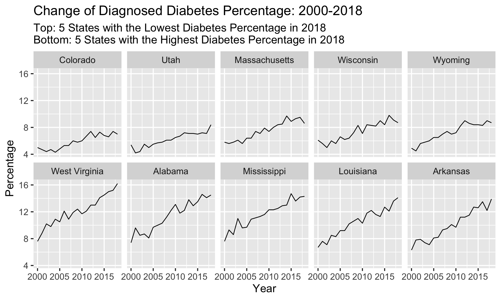
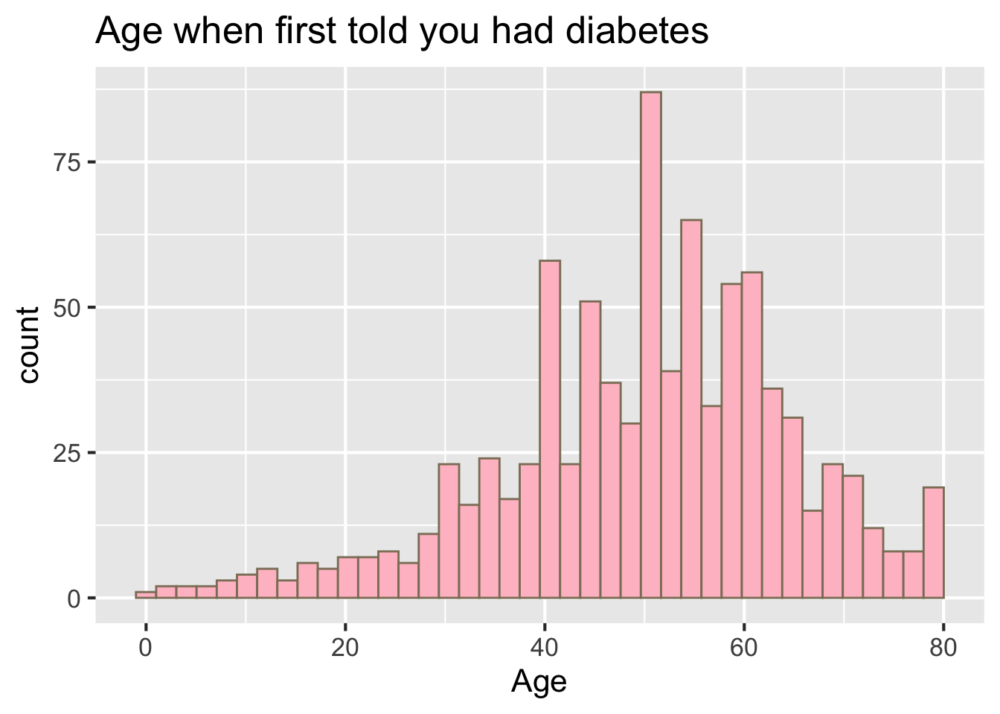

Chapter 5 Results
5.1 1st plot

The first plot is a map plot, which reflects the percentage of diagnosed diabetes in each state in the year 2018. We can see that West Virginia, Alabam, Mississippi, Louisiana, and Arkansas have the most percentage of diabetes patients with a range from 13.9% to 16.2%. And areas around these 5 states have relatively high percentages of diagnosed diabetes. Colorado, Utah, Wisconsin, and Wyoming shows the least diagnosed patients among American with a range from 7% to 8.8%.
The states around the northwest of the U.S. have a relatively lower rate of diabetes patients compared with the states in the southeast part.
5.2 2st plot

The second plot is a time series facet plot. Originally, we were planning to use faceting by five-year intervals to show percent change over time in diagnosed diabetes from 2000 to 2018 and explore the diagnosed percentage changing trend among states in the United States. However, after working hard under the choroplethr package, we failed to facet under this package.
Therefore, we decided to find 10 states with the lowest and highest diabetes percentage in 2018 and plot the percentage of diagnosed diabetes from 2000 to 2018 in these 10 states. From this time series facet plot, we can see the states with the highest diabetes percentage in 2018 double the amount of in percentage increase than the states with the lowest diabetes percentage.
Meanwhile, the most recent percentage level of the lowest 5 states in 2018, which is around 8%, is just close to the beginning level of the highest states in the year 2000, almost ten years ago.
5.3 3rd plot
The third plot is the Cleveland dot plot. After exploring the diagnosed situation in the above two plots, we are curious about whether states with high diabetes diagnosis rates have high death rates caused by diabetes. Intuitively, we think the higher diagnosed rates will have higher death rates. Therefore we do a Cleveland dot plot for the year 2018 using our third data source. Considering the population differences among states and getting a clear presentative format, we divided the death number by population and multiplied by 100000 to get the death number in 100000 people.
The most revealing finding here is the District of Columbia has the highest death rate, however, its diagnosed rate is not such significant. What’s more, there is not any overlap between the 10 states with the lowest and highest diabetes percentage and the 10 states with the lowest and highest death rate.
5.4 4th plot

The fourth plot is the mosaic plot. We use age, gender, race, and education as independent variables vertically in each mosaic plot, and set whether diagnosed with diabetes as a dependent variable horizontally. We can see that diabetes is more correlated with age. The older the participant is, the more likely he/she will be a diabetes patient, especially for people aged 45+.
And we cannot see any obvious patterns for diabetes with gender and race. In the education against diabetes mosaic plot, we can see a negative correlation between education level and diabetes probability. People with higher education levels will have a lower probability of diabetes.
5.5 5th plot

The fifth graph is a histogram showing the age when people were first diagnosed with diabetes. Before we do the plot, intuitively, we think the probability people get diabetes will increase with age. That is the number of people in 60-80 being first diagnosed with diabetes will be higher than that of people in 40-60. However, this actual plot gives us a revealing finding, which shows the high incidence of diabetes period is aged approximately 40 to 60. Then there is an obvious decrease in the number of people being first diagnosed with diabetes at the age above 60, which is a discrepancy against our guess.
But this is actually reasonable since the diagnosed diabetes is non-reversible, no matter what age people are diagnosed, they will mostly have diabetes their whole life. So, the diagnosed diabetes is a cumulative percentage and is certainly different from the distribution of age when people were first diagnosed with diabetes. But this high diagnosed percentage in 40-60 reminds people should take extra care at this age.
Importantly, the topcoding problem happened at the age of 80. The value 80 in the questionnaire includes people whose ages are 80 and above. We notice the topcoding issue here, but due to the limitation of the questionnaire, we can not avoid the topcoding problem.
5.6 6th plot

The sixth graph is a heatmap. The x-axis is the Ten-Year Age Groups, and the y-axis is death reason categories by CDC. We convert the raw data of death and population into the death rate, which means the number of people die in 100000 people due to that reason. We fill the heatmap with the death rate. We use perceptually uniform color spaces to fill the heatmap.
Our subjective assumption is most diabetes people died due to insulin-dependent diabetes, however, the statistical graph tells us most diabetes people died due to Unspecified diabetes reasons. And match our intuition, older people with diabetes are at a higher risk than younger people with diabetes.
5.7 7th plot
The seventh graph is a boxplot. In this graph, we want to explore the times of checking blood sugar with A1C level. The A1C test is a simple blood test that measures your average blood sugar levels over the past 3 months. Then We can see a general trend that if people check blood sugar more often, there will be fewer outliers.
5.8 8th plot

The eighth graph is a parallel coordinate plot showing the relationship between five variables, which are hypertension awareness, diagnosed diabetes, high cholesterol awareness, obesity, and physical inactivity.
We can see an obvious negative relationship just as we expected between hypertension awareness and diagnosed diabetes. If people’s awareness of hypertension is high, they will less likely to get diabetes. Similarly, diabetes and high cholesterol awareness also show a negative correlation.
Then the high cholesterol awareness and obesity show a weak negative correlation, which is not strong enough as the two correlations before. The last correlation is between obesity and physical inactivity. We can also observe a weak negative correlation between them, which is not what we expected. We expected these two variables to show a strong positive correlation, so we will do further analysis on this in the next plot.
5.9 9th plot
The ninth graph is the scatter plot matrix. The correlation in the parallel coordinate plot is state level not so significant, so we decide to use county-level data and explore the further relationship between diagnosed diabetes, social vulnerability index, obesity, and physical inactivity. Since there are over 3000 counties, we randomly sample the data to get this plot.
The social vulnerability index refers to the potential negative effects on communities caused by external stresses on human health. In our plot, the SVI and diagnosed diabetes show a slight positive relationship. This means the more external stresses people faced, the more likely he/she will get diabetes. A more obvious positive correlation exists between diagnosed diabetes and obesity. We can also see a strong positive correlation between obesity and physical inactivity. These findings match our intuition.
5.10 10th plot
The tenth graph is a time series line chart for the total death caused by diabetes in the United States by month. We can see a cyclic trend in the plot, the death numbers often reached the peak in the January of the year. This may be due to the cold weather of the year. And we can see the death numbers went to the lowest mostly in June or September which is the summer. The increase in death numbers may be due to the cold weather of the year.
When it comes to the year 2020, the death number pattern changed, as it should go down after January as the cyclical trend, instead it kept increasing dramatically until April. And even though, it started to drop after April, it still maintains higher than previous years’ peak. And December of 2020 has the highest number of deaths caused by diabetes in the past 20 years. The most likely cause for this is COVID-19. As people with chronic conditions are at a higher risk during the pandemic.